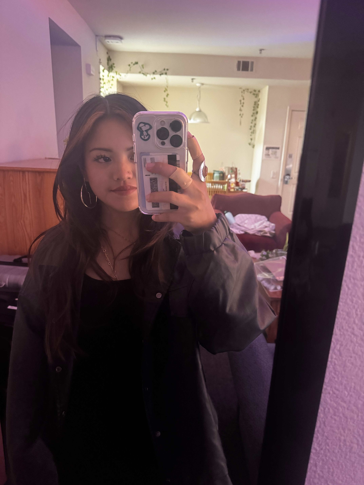

Hello! I hope you enjoyed my blog. My name is Jillian Leh, and I am
currently a student-athlete at the University of San Francisco, and I am
studying Design with a minor in User Experience & User Interface. I had
the amazing opportunity to spend my first time outside of the United
States in Japan! It was just a vacation with my friend and her family, but
this journey was so healing for me. This journey ignited my passion for
traveling, and I hope to explore more countries in the future.
email:
jcleh@dons.usfca.edu
instagram: @j.le47
